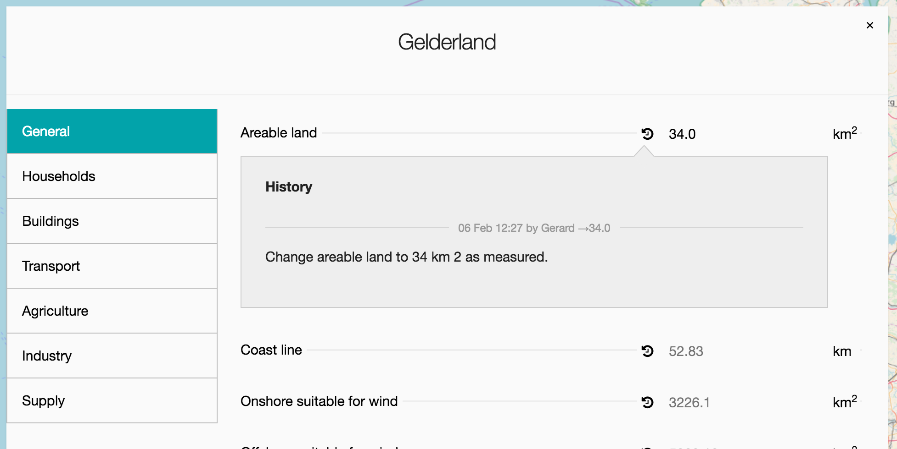
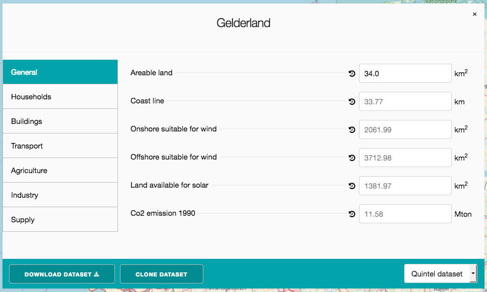
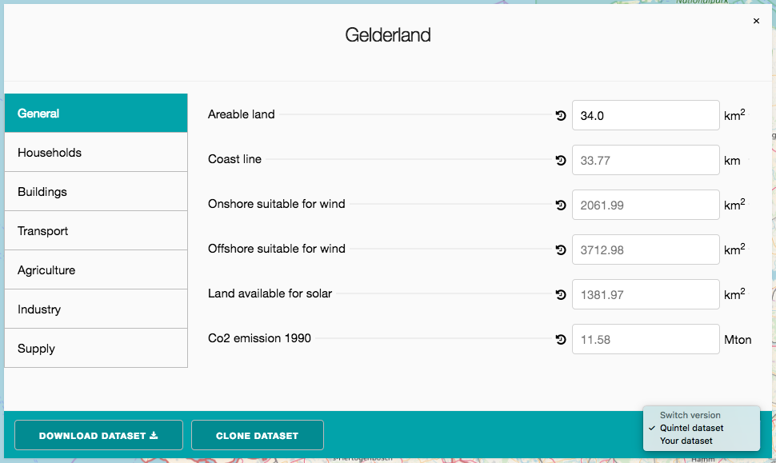

class: center, middle # ETLocal ## Meeting --- # Agenda 0. Preface 1. Current status 2. Decision #1 3. New features 4. Future --- # Preface Provinces, municipalities, districts and neighborhoods have their own unique questions for their energy systems. ETLocal provides a way to get meaningful insight into their current situation and allows to customize and create stable, transparent present situations for usage inside of ETModel. --- # Current status <a href"https://beta-local.energytransitionmodel.com/" target="_blank">https://beta-local.energytransitionmodel.com/</a> ETLocal is currently in a phase where a user can edit local datasets based of The Netherlands; one of every province, municipality, district or neighborhood. Everybody with an account can change it's values. This is not great and pretty unstable. Another issue is that the values in the front-end of ETLocal are currently unanswerable without the use of a secondary tool to calculate them. --- # Decision #1: ETLocal must support it's users to create a new dataset* for an existing region. _For example: A user wants to create his own version of Drenthe._ <p style="font-size: 12px"> * A dataset in ETLocal is a collection of start values with a certain name-tag on it. With these values you can create an 'ETsource' dataset. </p> --- # What does this decision imply? 1. ETLocal must hold a set of default values which we can call 'The Quintel default dataset'. 2. A user must be able to clone/fork these defaults into his own dataset. 3. A user must be able to set his dataset to public or private. 4. A dataset must belong to a user or group ('Quintel' being such a group). 5. Depending on the group you are in, you'll have different access levels to ETLocal. 6. A user must be able to destroy his own dataset. --- # New features (1/6) ### ETLocal must hold a set of default values which we can call 'The Quintel default dataset'. - Create 2 groups 'default' and 'quintel' (being respectively non-admin, admin) **(2 hours)**. - Assign all current datasets to the 'Quintel' group **(2 hours)** - Only users who are part of the 'Quintel' group can edit 'Quintel' datasets. - Users who are part of the 'default' group can only 'view' the Quintel datasets. - Set permissions for user groups **(2 days)** --- # New features (2/6) ### A user must be able to set his dataset to public or private. **Conditions:** - Every Quintel dataset is public - Every cloned dataset is by default private, unless explicitly published by the user **Features:** - Add the possibility to switch between public/private for a dataset **(2 hours)**. --- # New features (3/6) ### A user must be able to clone/fork these defaults into his own dataset. - Expand permissions for cloning **(2 hours)** - A dataset must be copy-able, when public **(2 hours)** - A dataset must also belong to a user (next to a group) **(2 hours)** --- # New features (4/6) ### Depending on the group you are in, you'll have different access levels to ETLocal. - Default users can view all public datasets and edit their own datasets. - Quintel users can view/edit all datasets. --- # New features (5/6) ### A user must be able to destroy his own dataset. - A user must be able to destroy his forked dataset **(4 hours)**. --- # Design (1/4) ### What a default user sees when opening a public dataset <img src="images/54.png"/> --- # Design (2/4) ### What a default user sees when opening a public dataset  --- # Design (3/4) ### New features in the bottom (clone, switching versions)  --- # Design (4/4) ### New features in the bottom (clone, switching versions)  --- # Up next The next sprints will be about: 1. Adding basic user authorization and the possibility to clone a dataset (2 weeks) 2. Discovering and discussing the possible transformations that are needed in order to come to a front-end which suits the needs of our users (2 weeks)